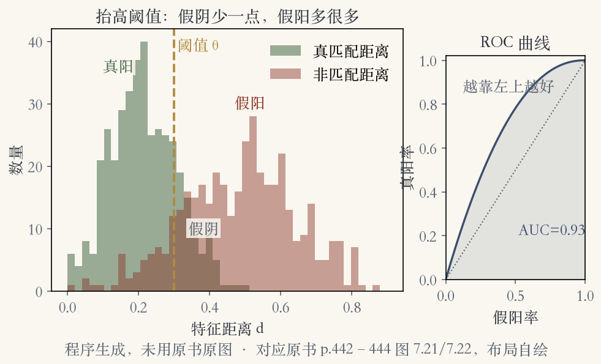
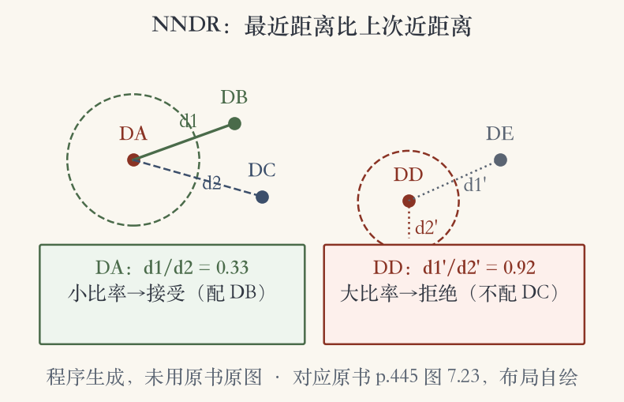
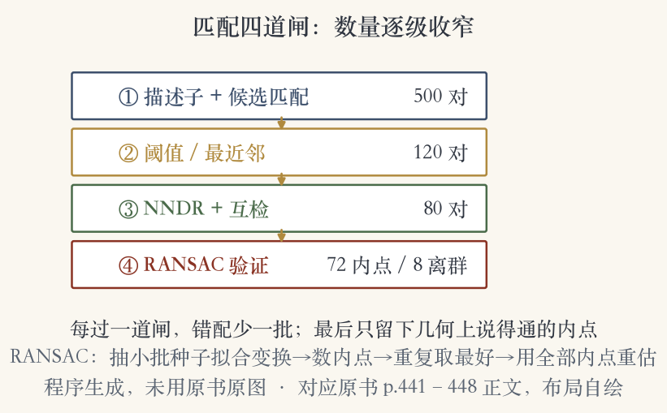

第 7 章 · 特征匹配
描述子之后：把两张图的点对上
- 特征和描述子提取完，下一步是初步匹配。
- 已知重叠的图像和数据库检索，策略不同。
- 重叠图像里，多数特征能匹配，少数被遮挡。
依据：原书第 441 页
先问应用
拼接：图像已知重叠
检索：可能完全不对应
遮挡与外观变化要容忍
特征匹配 · 两个组件
匹配拆成两半：留哪些，怎么找快
- 先选匹配策略，决定哪些对应进入下一阶段。
- 再设计数据结构与算法，把搜索做快。
- 策略决定准不准，索引决定快不快。
依据：原书第 441 页
两个组件
匹配策略：筛选对应
索引结构：加速搜索
本集先讲策略，再讲索引
特征匹配 · 距离与白化
距离与白化：先调平各分量
- 假设描述子让欧氏距离可以给候选排序。
- 更可靠的轴，先按已知好匹配重新标定。
- 变换到新的缩放基，叫白化。
- 不调平，距离会被大方差分量带偏。
依据：原书第 441 页
两步
重标定：可靠轴权重高
白化：换到缩放基
目的：距离更可比
特征匹配 · 固定阈值
固定阈值：假阳和假阴两头难
- 设一个最大距离，阈值内都算匹配。
- 阈值太高，假阳增多，错配被返回。
- 阈值太低，假阴增多，正确匹配漏掉。
- 图 7.21 画出了这两种情况。
依据：原书第 441–442 页

阈值两难：距离分布、真阳、假阳、假阴｜程序生成，未用教材或论文原图
特征匹配 · 混淆矩阵
混淆矩阵：四个格子看清对错
- 表 7.1 的例子：真阳 18、假阳 4。
- 假阴 2、真阴 76。
- 真阳是正确匹配，假阴是漏掉的正确匹配。
- 假阳是错误匹配，真阴是正确拒绝。
依据：原书第 442 页
四个格子
真阳：配对且正确
假阳：报了但错了
假阴：对的没报
真阴：不配且拒绝
特征匹配 · 比率指标
四个比率：查全与查准
- 真阳率、假阳率、阳性预测值、准确率。
- 检索文献里，阳性预测值叫精确率。
- 真阳率叫召回率，两者可合成 F 值。
- F 值是精确率和召回率的调和平均。
依据：原书第 443 页
两组问法
精确率：报出的有多少是真的
召回率：真的有多少被报出
F 值：两边都要顾
特征匹配 · ROC 与 AUC
ROC 与 AUC：把取舍画成一条线
- 理想情况是真阳率接近 1、假阳率接近 0。
- 改变阈值得到一族点，连起来就是 ROC。
- 越靠左上、AUC 越大，性能越好。
- 也可以用等错误率，图 7.22 还画了距离分布。
依据：原书第 443–444 页
两个数
AUC：所有阈值的总体排序
等错误率：两条错误率相等处
都不绑定单一阈值
特征匹配 · 阈值难设
死阈值难设：先找最近邻
- 有用阈值的范围，会随特征空间区域变化。
- 更好的做法是直接找特征空间里的最近邻。
- 有些特征本来没有匹配，仍要留阈值压假阳。
- 有训练数据时，阈值可以随区域自适应。
依据：原书第 443–444 页
从全局到局部
全局阈值：一个数管全部
最近邻：先找最像的
自适应：按区域调
特征匹配 · 最近距离比率
NNDR：最近比次近领先多少
- 拼接或无序照片建三维时，常用这个启发式。
- 比较最近邻距离和次近邻距离。
- 次近邻最好取自一张已知不匹配的图像。
- DA 是目标，DB 和 DC 是最近的两个邻居。
依据：原书第 444 页
比率怎么看
比率小：第一名领先明显
比率大：前两名差不多
大比率匹配可疑
特征匹配 · 比率示例
三种选法：漏配、错配与比率测试
- 固定阈值下，DA 配不上 DB。
- DD 还会错配 DC 和 DE。
- 只取最近邻，DA 能配对，DD 仍错。
- NNDR 小比率接受 DA，大比率拒绝 DD。
依据：原书第 445 页

NNDR 比率：DA 小比率接受、DD 大比率拒绝｜程序生成，未用教材或论文原图
特征匹配 · 互检
互检：两边都点头才算数
- 单向 NNDR 之外，还可以做相互 NNDR。
- 至少也要加交叉一致性检查。
- 书上说，这明显优于单向 NNDR。
- 互检尤其能挡住一对多的错配。
依据：原书第 444 页
互检
A 认 B，B 也认 A
两边都通过才保留
专治一对多
特征匹配 · 高效搜索
找得快：先建索引再细比
- 最简单是全对全比较，现代 GPU 已经能承受。
- 更高效的是建索引，比如多维搜索树或哈希表。
- 索引可以按图建，也可以给整个数据库建。
- 超大数据库用词汇树、乘积量化、倒排多索引。
依据：原书第 445 页
索引只负责快
全对全：简单但贵
索引：先圈一小撮
准不准还要靠策略
特征匹配 · 哈希索引
哈希：按大致方位分抽屉
- 多维哈希把描述子映射到固定大小的桶。
- 查询时把新特征哈希进桶，再搜邻近桶。
- MOPS 用八乘八图块的四个象限求和。
- 局部敏感哈希用多个独立哈希函数取并集。
依据：原书第 445–446 页
MOPS 的数字
三元素索引
十个一维桶取最近两个
三维索引共八个桶
特征匹配 · k-d 树
k-d 树：沿轴切分特征空间
- 沿交替的轴对齐超平面切分特征空间。
- 切分尽量让树平衡。
- 查询先定位到所在箱，再搜邻近叶。
- 最佳箱优先按空间邻近顺序搜箱。
依据：原书第 446–447 页
特征匹配 · 近似最近邻库
现成工具：随机化 k-d 树与成熟库
- Muja 与 Lowe 比较多种方法，随机化 k-d 树往往最好。
- 现代近似最近邻库有 FLANN 和 Faiss。
- 工程上先看成熟库的默认配置。
- 数据规模变了，参数要重新调。
依据：原书第 447 页
两条建议
多个随机化 k-d 树
FLANN 与 Faiss
规模变了重调参数
特征匹配 · 几何验证
几何验证：RANSAC 怎么筛内点
- 用几何对齐判断哪些是内点、哪些是离群点。
- 抽一小批种子匹配拟合全局变换，再验证更多。
- 这个过程常叫随机采样或 RANSAC。
- RANSAC 内点太少时，也会拟合出错误变换。
依据：原书第 447–448 页

匹配四道闸：候选、阈值、NNDR 与互检、几何验证｜程序生成，未用教材或论文原图